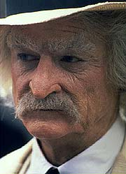
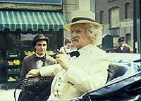
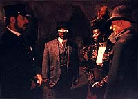
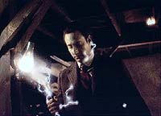

|
MANCHETE
DO EPISÓDIO
Continuação
mostra criatividade e
habilidade para usar os personagens
Episódio
anterior | Próximo
episódio
Sinopse:
Data Estelar: 46001.3.
Samuel Clemens está convencido de que Data e Guinan são invasores
do futuro e relata de forma vaga sua teoria a um repórter. Ele
interrompe abrutamente seu discurso, entretanto, quando vê Data
saindo de um prédio e caminhando pela rua. Ele segue o andróide,
enquanto a seu lado passam os verdadeiros invasores alienígenas,
disfarçados como um distinto casal da época.
Enquanto isso, Riker e a dra. Crusher, já vestidos apropriadamente,
estão em um hospital à procura de sinais da ação dos alienígenas.
Beverly descobre que muitas das vítimas da suposta epidemia de cólera
morreram na verdade depois que sua energia neural foi totalmente
drenada. Ela e Riker imaginam que os alienígenas viajaram de volta
para essa época cheia de epidemias para poder usá-las como uma
cobertura para suas atividades assassinas.
A dupla retorna ao apartamento onde todos estão hospedados e relata
as descobertas, e Picard e seus comandados decidem se infiltrar no
hospital para tentar pegar os alienígenas. Eles determinam que os
alienígenas devem ser detectáveis a curta distância via tricorder,
por conta de suas emissões triólicas, e notam que ainda não
conseguiram contatar Data.
Nesse meio tempo, Sam Clemens consegue ir ao quarto de hotel de Data
com a ajuda do atendente Jack, e em troca o aconselha a seguir seus
sonhos e a escrever sobre eles. Satisfeito, Jack revela seu nome
completo, Jack London, e diz que fará exatamente isso). Sozinho no
quarto, Clemens pega um peça do estranho invento de Data como evidência
do que estava ocorrendo, mas precisa se esconder rapidamente no armário
quando Data retorna ao aposento com Guinan. Os dois discutem meios
de chegar à caverna onde a cabeça de Data será encontrada no
futuro, até que Data nota a falta de uma das peças de seu
equipamento. Guinan imediatamente liga o sumiço a Clemens, e os
dois o encontram dentro do armário.
Conforme Data recoloca a peça em seu lugar, Clemens aos brados
defende suas ações em nome dos interesses de sua espécie e de sua
época. Ele desafia o andróide a explicar suas andanças por toda a
cidade à procura de um caverna, e acusa o par de planejar causar
danos ao século 19 com tecnologia do futuro.
Algum tempo depois, o grupo avançado está trabalhando no hospital,
instalando alarmes discretamente para acusar a presença dos alienígenas.
Beverly, como enfermeira, é a primeira a notar o disparo do
mecanismo e se move para interceptar o estranho médico e a
enfermeira que apareceram ali. Sem uma palavra, eles começam a se
mover na direção dela, mas ela é salva pela chegada do resto do
grupo. Em inferioridade numérica, os dois alienígenas desaparecem,
mas deixam para trás a bengala. O grupo prepara-se para deixar o
local quando um policial chega e tenta impedi-los. Riker põe o
oficial a nocaute e todos fogem. Com a polícia no encalço, a fuga
só tem sucesso graças à ajuda de Data, que passava pelo local com
uma carruagem, depois de ter sido avisado do
"desaparecimento" dos alienígenas pelo detector de fendas
temporais que construiu em seu quarto.
De volta ao quarto alugado, a equipe de Picard tenta ativar a
bengala. Com um disparo de feiser, ela se torna a cobra que eles
procuravam e causa pequenas rupturas no tempo. Entretanto, as fendas
são muito pequenas e de duração muito curta. Será necessário um
mecanismo para focalizá-las, eles concluem. O resto da equipe então
parte para a caverna onde a cabeça de Data será encontrada,
enquanto o andróide e Picard vão até a casa de Guinan. Lá, o
verdadeiro "primeiro encontro" de Picard e Guinan
acontece, e dessa vez Picard tem a vantagem de já saber quem ela é.
Clemens, depois de descobrir que Data esteve envolvido na fuga do
pessoal do hospital, dirige-se para a caverna. Lá Geordi descobre
que as paredes servem como um sistema para focalizar as rupturas,
uma "lente triólica", como ele define. Supondo que a
caverna em Devidia II seja projetada similarmente, destruir aquele
local poderia interromper as idas dos alienígenas à Terra.
 Eles decidem tentar
usar a cobra para voltar a seu século, mas são interrompidos pela
súbita chegada de Clemens, que ameaça a todos com uma arma Colt-45
e exige que eles saiam. Nesse momento, entretanto, os alienígenas
voltam a parecer e tentam recuperar a bengala. Data a pega de volta
e subjuga o homem, logo antes de a bengala disparar. O primeiro
disparo fere a alienígena disfarçada de mulher, e o secundo
arranca a cabeça de Data e derruba todos no chão. Quando eles se
recuperam, vêem a bengala sumir e um portal temporal se abrir. O
alienígena homem corre por ele, e todo o grupo avançado, exceto
por Picard (que ficou para cuidar de Guinan, ferida), vai atrás.
Antes de o portal se fechar, Clemens também o atravessa.
De volta a Devidia II, todo mundo parece bem, mas Riker fica
insatisfeito ao ver Clemens lá. Eles encontram o corpo decapitado
de Data (ainda segurando a bengala), e todos são levados a bordo da
Enterprise. Lá, Geordi começa a tentar recolocar a cabeça que
eles têm atualmente, enquanto Troi se voluntaria para dar a Clemens
um tour.
No século 19, Picard cuida de Guinan. Embora ela esteja intrigada
pela atitude generosa do capitão, ele revela que eles serão muito
ligados no futuro (bem mais que amigos, ele define). Eles vêem a
cabeça de Data, que Picard se refere à "história cumprindo a
si mesma".
No século 24, Guinan diz a Riker que não pode contar nada a ele,
para não interferir com as ações que ele teria se não pudesse
contar com o conhecimento dela do que aconteceu naquela caverna no século
19. Enquanto isso, Troi mostra a Clemens que não há
monstruosidades na humanidade do século 24, e que todos os
problemas que ele conhecia, como pobreza e conflito, foram
eliminados. Chegando ao laboratório, Geordi ainda tenta religar
Data, e Clemens encontra seu relógio. Ele agora lamenta por ter
julgado mal o andróide.
Na Terra, Picard interroga a alienígena ferida, que insiste que
eles precisam de energia humana e não tinham escolha a não ser
fazer aquilo. Quando Picard revela seu plano de destruir a caverna
em Devidia II, ela diz que o armamento da Enterprise vai só ampliar
a distorção temporal e destruir a Terra. Morrendo, ela desaparece.
Enquanto Worf prepara um disparo de torpedos fotônicos para
destruir a caverna, Geordi descobre que um filamento de ferro está
prejudicando o funcionamento da cabeça de Data. Intrigado, ele se
pergunta como aquilo foi parar lá.
 Picard,
no século 19, usa um filamento de ferro para codificar uma mensagem
na cabeça de Data. Com um minuto no século 24 até que os torpedos
sejam lançados, Geordi consegue religar Data, que compreende a
mensagem de Picard e aborta o lançamento dos torpedos. Com o
problema identificado, eles começam a modificar os torpedos de
forma a destruir os alienígenas sem causar o abalo temporal.
Entretanto, ainda não há como trazer Picard de volta ao século
24. Beverly diz que o uso dos feisers só poderia abrir um portal
forte o suficiente para o transporte de uma pessoa, ida e volta.
Clemens se oferece para voltar a sua própria época e permitir o
retorno de Picard ao futuro. Ele agradece Data por permitir a ele
participar de uma nova aventura e se recuperar de sua amargura para
com o futuro da humanidade.
Quando Picard está pronto para sair da caverna e ajudar Guinan,
Clemens corre com instruções. Com menos de cinco minutos até a
explosão dos torpedos em Devidia II, ele explica a situação a
Picard e concorda em ajudar Guinan a receber tratamento. Picard se
despede e deixa o local.
Riker ordena o disparo dos torpedos. Picard chega poucos instantes
antes do impacto, mas é transportado em tempo de volta à
Enterprise. A caverna é destruída, e o capitão agora tem um novo
entendimento de sua relação com Guinan. No século 19, Clemens
providencia o tratamento para Guinan e, sabendo do que vai acontecer
no futuro, deixa seu relógio na caverna, a apenas alguns metros de
onde está a cabeça de Data.
Comentários:
A conclusão de "Time's
Arrow" consegue ser melhor que a abertura, por evitar se
fechar muito sobre a premissa altamente complexa da viagem temporal
e dos fantasmagóricos alienígenas comedores de almas humanas e se
abrir para as possibilidades que colocar nossos heróis no século
19 abrem.
Claro, não foi possível esquecer as ondas triólicas, a
bengala-cobra e o conceito radical de alienígenas viajando no tempo
com o único propósito de extrair a energia neural de humanos
indefesos, mas finalmente foi possível trabalhar com todos esses
conceitos em paralelo à evolução dos personagens.
Essa maior atenção à tripulação, que agora está toda no século
19, teve como efeito colateral a redução da importância de Data
em toda a trama. Se a primeira parte da história era praticamente
exclusiva dele, nesta segunda, os papéis se invertem, e a tripulação
ganha os holofotes em um episódio no estilo "À Procura de
Data".
 De uma forma ou de
outra, nenhum personagem principal foi esquecido: Beverly teve um
papel importante detendo os alienígenas no hospital, Riker esteve
hilário levando o oficial da polícia de San Francisco a nocaute,
Geordi teve papel fundamental na volta à Enterprise, restaurando a
"saúde" de Data, e a cena em que os tripulantes se fingem
de uma trupe de atores para ludibriar a pobre dona do apartamento
alugado, envolvendo-a em uma encenação de "Sonho de uma Noite
de Verão" como Titania, é uma pérola. Momentos como esse
fizeram da conclusão de "Time's Arrow" um episódio
muito mais "saboroso" que sua primeira parte.
Aqui também temos a chance de observar mais Samuel Clemens, vulgo
Mark Twain, em ação. E o escritor "mala-sem-alça" é
outro personagem que lamentamos não poder ver mais. Para quem não
está tão familiarizado com Twain, talvez não seja tão legal, mas
uma boa comparação para os brasileiros seria imaginar a aparição
de Machado de Assis em um episódio. Por mais que ela seja
insignificante, trará algo de especial para a audiência. (Se você
quer participar da magia disso e se apaixonar por Mark Twain, clique
aqui.)
E neste caso, foi muito mais que isso. Clemens atua de forma
importante na história, e, ao final, é ele quem fornece a chave
para que Picard possa ser salvo, concluindo uma intrincada história
de viagem temporal que, pasme, não deixa seqüelas.
Se há uma coisa impressionante neste episódio, é a capacidade dos
roteiristas de atar todos os nós desatados nessa maluca premissa de
viagem no tempo, resolvendo todos os problemas sem
"alterar" nenhum dos eventos originalmente mostrados. A
forma como Data evita sua própria morte e mesmo assim cumpre a
profecia de perder sua cabeça no século 19 é brilhante e não
permite que o telespectador adivinhe até que a situação esteja
iminente. Realmente um golpe de criatividade que não se costuma ver
sempre.
 Também
é bastante interessante o estabelecimento do "verdadeiro"
início do relacionamento entre Picard e Guinan. Todo o enlace
temporal realmente faz da situação algo que só poderia mesmo ir
"muito além da amizade". Imagine você encontrar um velho
amigo que, em contrapartida, nunca te viu antes. Suas ações
certamente o irão cativar enormemente, por sua simpatia e amizade
aparentemente inexplicáveis. Então, anos depois, esse sujeito o
encontra e demonstra todo o seu afeto para com você, e você nem
sabe quem ele é! Essa amizade forçosamente intensa e sem paralelos
só podia mesmo produzir um relacionamento dos mais misteriosos. E
ao final de "Time's Arrow" Picard entende como tudo
isso foi acontecer.
A resposta é especialmente inteligente porque permite que
entendamos como a coisa toda foi ficar tão intensa entre os dois,
mesmo sem termos detalhes muito relevantes do que realmente se
passou depois entre a dupla, reforçando a amizade pelo lado de
Picard. Esse perpétuo mistério deixou o terreno fértil para que
outros pudessem explorá-lo em futuros episódios ou filmes (o fato
de que nenhum roteirista fez isso não invalida a inteligência
estratégica dos produtores nesse ponto do jogo).
Do ponto de vista de valores de produção, o episódio é
impressionante. Além da recriação fiel da San Francisco do século
19, há também um trabalho de figurino e estilo impressionante.
Veja por exemplo o penteado de Riker, com o cabelo impecavelmente
repartido e devidamente tratado com gel. Ou ainda os coques de Troi
ou Beverly. Tudo é recriado com fidelidade e qualidade.
A direção também vai muito bem, com tomadas incríveis que dizem
por si só o quanto "a história precisa satisfazer a si
mesma". A cena de conclusão do episódio, com Clemens deixando
seu relógio na caverna e a câmera se deslocando para mostrar a
cabeça de Data é brilhante e dá um sentido de fechamento para a
história que poucos episódios conseguiram até hoje. Começamos "Time's
Arrow" com a cabeça de Data (no prólogo da primeira
parte) e terminamos do mesmo jeito, atando as duas pontas. "Um
círculo completo", como diria Guinan.
A única crítica que pode ser feita na verdade é uma herança
inevitável da primeira parte --alienígenas que mais parecem (e se
comportam como) fantasmas e são criados com o fim de serem os
"monstros da semana", com direito a uma ferramenta que
mais parece uma cobra saída direto do inferno.
Algo mais sutil e interessante viria mais a calhar, até para tirar
o aspecto "ferramenta da história" que os aliens têm. De
toda forma, diante do que havia sido a primeira parte, não havia
muita opção.
Apesar disso, não seria exagero dizer que a sexta temporada de A
Nova Geração começou com o pé direito.
Citações:
Riker - "I just
want you to know I have the outmost respect for the law."
("Eu só quero que saiba que tenho o maior respeito pela
lei.")
Guinan - "Do you know me?"
("Você me conhece?")
Picard - "Very well."
("Muito bem.")
Guinan - "Do I know you?"
("Eu te conheço?")
Picard - "Not yet. But you will."
("Ainda não. Mas vai conhecer.")
Guinan - "I'll see you in 500 years, Picard."
("Vejo você em 500 anos, Picard.")
Picard - "And I'll see you in a few minutes."
("E eu vejo você em alguns minutos.")
Trivia:
 William Boyett, que aqui interpreta um policial, já fez um papel
semelhante no episódio “The Big
Goodbye” da primeira temporada. Lá, ele interpretou outro
policial, mas dessa vez no holodeck.
William Boyett, que aqui interpreta um policial, já fez um papel
semelhante no episódio “The Big
Goodbye” da primeira temporada. Lá, ele interpretou outro
policial, mas dessa vez no holodeck.
Alexander Enberg, que faz o jovem repórter, volta a participar da série
no episódio do sétimo ano “Lower Decks”. Pamela Kosh, a
senhorita Carmichael, participará do episódio final da Nova
Geração, “All Good Things...”.
Ao contrário da primeira parte, aqui as cenas externas não foram
filmadas em locações mas sim na novíssima rua de Nova York
construída dentro dos estúdio da Paramount.
Ficha
técnica:
História de Joe Menosky
Roteiro de Jeri Taylor
Direção de Les Landau
Exibido em 21/09/1992
Produção: 127
Elenco:
Patrick Stewart como
Jean-Luc Picard
Jonathan Frakes como William Thomas Riker
Brent Spiner como Data
LeVar Burton como Geordi La Forge
Michael Dorn como Worf
Gates McFadden como Beverly Crusher
Marina Sirtis como Deanna Troi
Elenco convidado:
Whoopi Goldberg como Guinan
Jerry Hardin como Samuel Clemens
Pamela Kosh como senhora Carmichael
William Boyett como um policial
Michael Aron como Jack (London), o mensageiro
Bill Cho Lee como um paciente
James Gleason como dr. Appollinaire
Mary Stein como uma enfermeira
Alexander Einberg como o jovem repórter
Majel Barrett-Roddenberry como a voz do computador
Episódio
anterior | Próximo
episódio
|